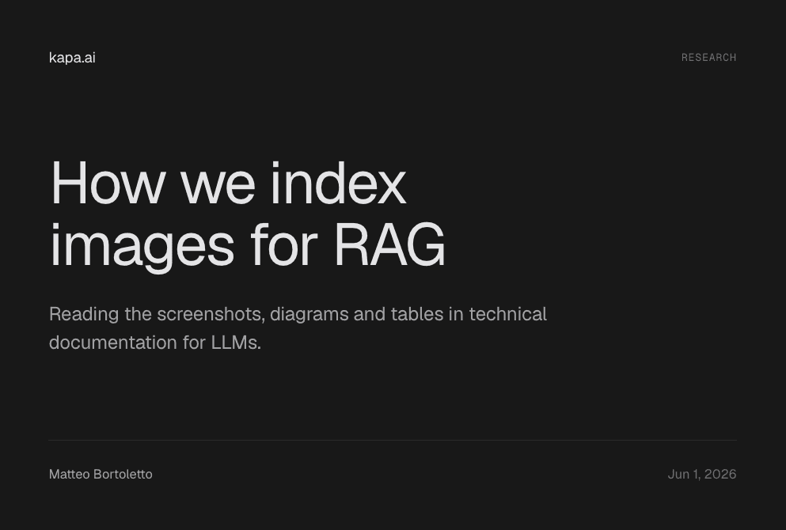
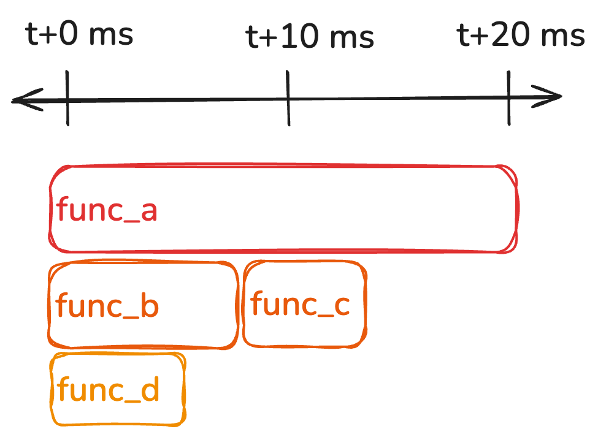

THE FRONT PAGE
EDITOR'S NOTE: A busy day in the latent space. #Judgment and craft
BREAKING VECTORS
MODEL ARCHITECTURES

Search as runtime synthesis: The shift from indexing to execution
Replacing text retrieval with real-time code generation offers precise answers, but trades predictable infrastructure for the fragile state machines of stochastic compilers.
NEURAL HORIZONS
LAB OUTPUTS

The Mechanics of Multimodal RAG: Moving Past Textual Proxies
Engineering teams are shifting from fragile text-description pipelines to indexing raw image embeddings for retrieval-augmented generation. While this reduces manual labeling overhead, it introduces a reliance on the brittle semantic alignment of dual-encoder models.
INFERENCE CORNER
Linux Hack Leverages GPU Memory for OS Swap Space
An unorthodox driver configuration allows Linux systems to use idle VRAM as general system swap space. While it provides a high-bandwidth buffer for memory-constrained setups, it risks wearing out GPU interconnects and introduces severe latency spikes when the PCI bus bottlenecks.

Continuous Profiling Arrives for OCaml
Pyro Caml introduces low-overhead production profiling to OCaml environments, offering rare visibility into the runtime behavior of a language often neglected by mainstream observability tooling. While the telemetry is precise, teams must weigh the marginal CPU overhead against the risk of flying blind in production.